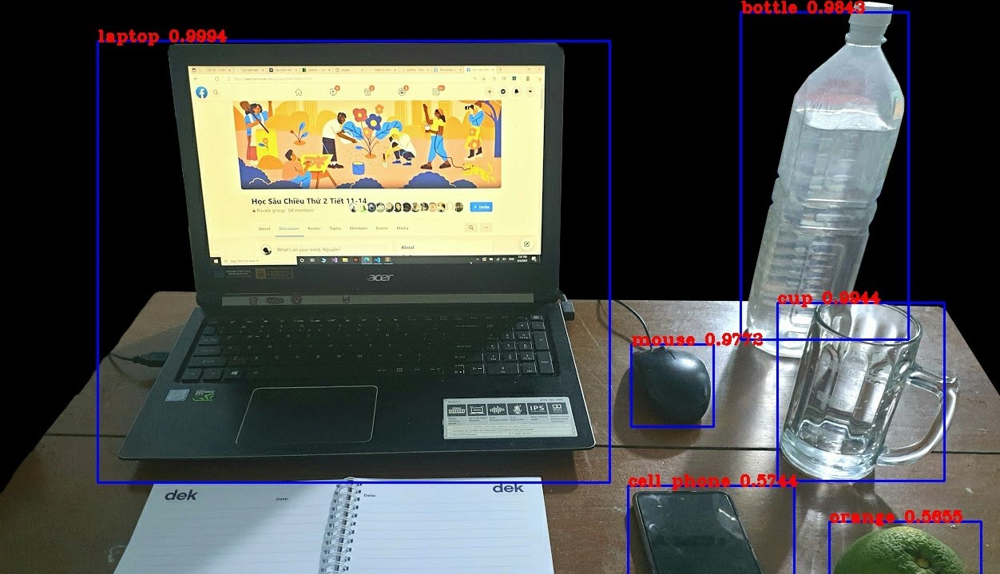

Upload your image
{% if filename %}Nhận diện đồ vật UTE Deep Learning
Thực hiện bởi
- Nguyễn Tuấn Kiệt
- Chung Thiên Nhi
- Nguyễn Quang Duy
- Lê Thanh Hải
- Nguyễn Trường Thịnh
- Dương Trung Bảo
- Phạm Hoàn Long
Trong sự yêu thương và dạy dỗ của thầy Nguyễn Thiên Bảo
Yolov3 là gì?
YOLOv3 (You Only Look Once, Version 3) là thuật toán phát hiện đối tượng (detect object) trong video hoặc hình ảnh
Được tạo ra bởi Joseph Redmon và Ali Farhadi. Reed more
Sử dụng Coco Dataset, Weight pre-train của tác giả có độ chính xác cao với 80 classes. Download Weight
Kiến trúc của Yolov3


Source:
Check my github here: Detect Object Web
Special Thank:
- Thầy Nguyễn Thiên Bảo
- Datahacker Blog
- @shahkaran76 with his post in medium.com
- @zzh8829 with his repo: yolov3-tf2
- ...and 1000+ website in my browser history for this project. Love you all